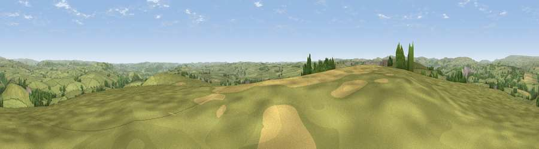

Viewpoint near Taddington
#12508 in England · top 15% of its area beats it · near TaddingtonWhere it is
The exact computed spot (SK 13375 70925). Click the marker for map links.
The view, rendered

A 360° render of this exact spot computed from the terrain model, tree cover and land cover — summer colours, afternoon light, calibrated against photographs of famous viewpoints. Real trees, hedges and buildings will differ in detail.
The panorama
Grey silhouette: terrain skyline in each direction (720 bearings, Earth curvature and refraction included). Dashed green: skyline with trees (+15 m) and buildings (+8 m) as obstacles. Blue strip: how far the ground is visible on each bearing.
Where the view opens
Wedge length = distance to the farthest visible ground on that bearing (vegetation-aware). Rings at 10, 25 and 50 km.
What fills the view
85% grassland · 11% woodland · 2% cropland · 2% built-up
Angular shares of the visible panorama (visual magnitude), not map area. Landscape diversity 0.23 (0–1 Shannon).
Key numbers
More beautiful places nearby
The staircase of upgrades: each row has a higher view potential than everything closer. Driving times are estimates from straight-line distance, calibrated against real road routing — check an actual route before setting out.
| Place | Direction | Drive | Score |
|---|---|---|---|
| Chelmorton Low | W · 2 km | ~5 min | 61.2 |
| Viewpoint near Earl Sterndale | SW · 5 km | ~11 min | 64.7 |
| Viewpoint near Earl Sterndale | SW · 5 km | ~12 min | 66.3 |
| High Rake | ENE · 8 km | ~16 min | 71.1 |
| Lord's Seat | N · 13 km | ~24 min | 73.1 |
| Viewpoint near Meerbrook | WSW · 15 km | ~27 min | 73.5 |
| Tissington Hill | S · 18 km | ~32 min | 75.5 |
| Viewpoint near Mow Cop | WSW · 30 km | ~47 min | 78.9 |
53.23519, -1.80107 · source: screening · position refined by local search. Computed location — check access rights before visiting.